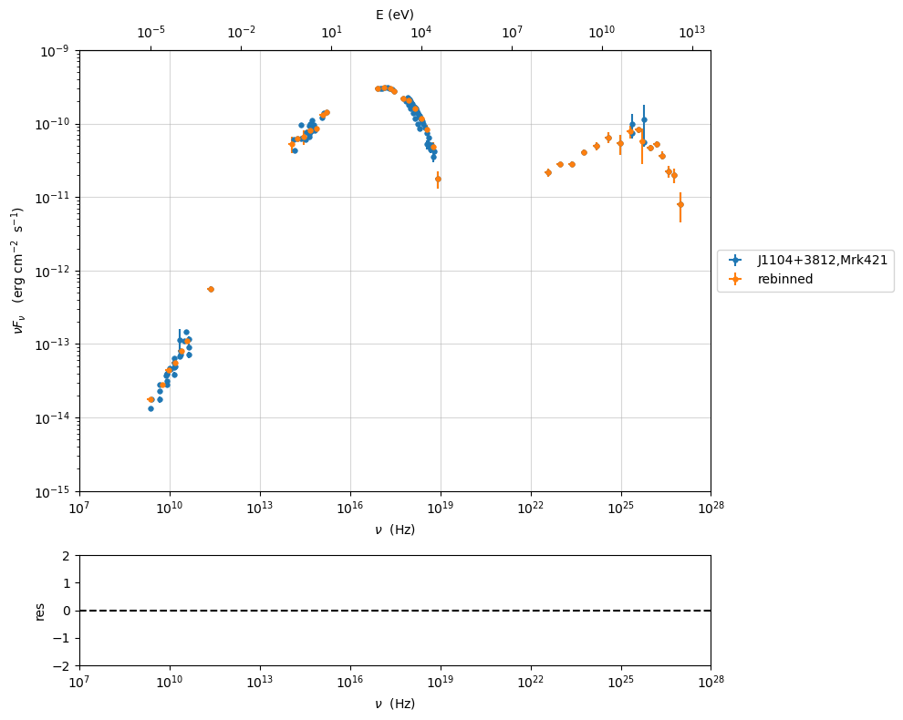

Data format and SED data#
The data are treated using two classes from the module data_loader
jetset.data_loader.Dataclass
The class jetset.data_loader.Data is in charge of storing the data, giving access to the I/O functionalities, and provides an interface to the astropy Table class (see the astropy table. documentation, for further information)
The class jetset.data_loader.ObsData uses the information stored in jetset.data_loader.Data, and can perform several operations
This is the class to use for model fitting and in general in Jetset
rebinning (grouping) of the data
selection of time ranges
selection of datasets
transformation from linear to logarithmic representation
handling of errors and systematics
Note
old version of data file in non ecsv astropy table format, can be easily converted by importing them using the method described in Importing from an arbitrary ascii file or numpy array to Data object and saving them
import jetset
print('tested on jetset',jetset.__version__)
tested on jetset 1.2.2
import warnings
warnings.filterwarnings('ignore')
import matplotlib
import numpy as np
import matplotlib.pyplot as plt
%matplotlib inline
Data format for Data object#
The SED data are internally stored as astropy tables, but it is very easy to import from
ascii files
numpy array in general
once that is clear the data format. The easiest way to understand the data format is to build an empty table to have a look at the structure of the table:
from jetset.data_loader import Data
data=Data(n_rows=10)
we can easily access the astropy table
data.table
| x | dx | y | dy | T_start | T_stop | UL | data_set |
|---|---|---|---|---|---|---|---|
| Hz | Hz | erg / (cm2 s) | erg / (cm2 s) | MJD | MJD | ||
| float64 | float64 | float64 | float64 | float64 | float64 | bool | bytes16 |
| 0.0 | 0.0 | 0.0 | 0.0 | 0.0 | 0.0 | False | 0.0 |
| 0.0 | 0.0 | 0.0 | 0.0 | 0.0 | 0.0 | False | 0.0 |
| 0.0 | 0.0 | 0.0 | 0.0 | 0.0 | 0.0 | False | 0.0 |
| 0.0 | 0.0 | 0.0 | 0.0 | 0.0 | 0.0 | False | 0.0 |
| 0.0 | 0.0 | 0.0 | 0.0 | 0.0 | 0.0 | False | 0.0 |
| 0.0 | 0.0 | 0.0 | 0.0 | 0.0 | 0.0 | False | 0.0 |
| 0.0 | 0.0 | 0.0 | 0.0 | 0.0 | 0.0 | False | 0.0 |
| 0.0 | 0.0 | 0.0 | 0.0 | 0.0 | 0.0 | False | 0.0 |
| 0.0 | 0.0 | 0.0 | 0.0 | 0.0 | 0.0 | False | 0.0 |
| 0.0 | 0.0 | 0.0 | 0.0 | 0.0 | 0.0 | False | 0.0 |
xcolumn is reserved to frequencies (mandatory)ycolumm is reserved to fluxes (mandatory)dxcolumm is reserved to the error on the frequency,or bin widthdycolumm is reserved to the error on the fluxesULcolumm is reserved to the flag for Upper LimitT_startandT_stopare used to identify the time range to select data using the classObsDatadata_set
data.table['x']
| 0.0 |
| 0.0 |
| 0.0 |
| 0.0 |
| 0.0 |
| 0.0 |
| 0.0 |
| 0.0 |
| 0.0 |
| 0.0 |
columns with units are implemented using the Units module of astropy
(https://docs.astropy.org/en/stable/units/).
and we can easily access the metadata
data.metadata
OrderedDict([('z', 0),
('UL_CL', 0.95),
('restframe', 'obs'),
('data_scale', 'lin-lin'),
('obj_name', 'new-src')])
z: the redshift of the objectUL_CL: the CL for the ULrestframe: possible valuesobsorsrc, indicating if the data are observed flux, or luminosities, respectivelydata_scale: possible valueslin-linorlog-log, indicating if the data are in linear or logarithmic scale, respectivelyobj_name: the name of the object
Note
starting from version 1.1.0 src to obs transformation is available
Loading from astropy table#
you can use the default SEDs distributed with the package to get familiar with data handling
from jetset.test_data_helper import test_SEDs
test_SEDs
['/Users/orion/anaconda3/envs/jetset/lib/python3.8/site-packages/jetset/test_data/SEDs_data/SED_3C345.ecsv',
'/Users/orion/anaconda3/envs/jetset/lib/python3.8/site-packages/jetset/test_data/SEDs_data/SED_MW_Mrk421_EBL_DEABS.ecsv',
'/Users/orion/anaconda3/envs/jetset/lib/python3.8/site-packages/jetset/test_data/SEDs_data/SED_MW_Mrk501_EBL_ABS.ecsv',
'/Users/orion/anaconda3/envs/jetset/lib/python3.8/site-packages/jetset/test_data/SEDs_data/SED_MW_Mrk501_EBL_DEABS.ecsv']
As you can see there are three 3 files. We use in this example the file for Mrk 421, and we use class:jetset.data_loader.Data class
from jetset.data_loader import Data
data=Data.from_file(data_table=test_SEDs[1])
data.table
| x | dx | y | dy | T_start | T_stop | UL | data_set |
|---|---|---|---|---|---|---|---|
| Hz | Hz | erg / (cm2 s) | erg / (cm2 s) | MJD | MJD | ||
| float64 | float64 | float64 | float64 | float64 | float64 | bool | str13 |
| 2299540000.0 | 0.0 | 1.3409e-14 | 3.91e-16 | 0.0 | 0.0 | False | campaing-2009 |
| 2639697000.0 | 0.0 | 1.793088e-14 | 3.231099e-26 | 0.0 | 0.0 | False | campaing-2009 |
| 4799040000.0 | 0.0 | 2.3136e-14 | 2.4e-16 | 0.0 | 0.0 | False | campaing-2009 |
| 4805039000.0 | 0.0 | 1.773414e-14 | 1.773414e-15 | 0.0 | 0.0 | False | campaing-2009 |
| 4843552000.0 | 0.0 | 2.77614e-14 | 2.615339e-26 | 0.0 | 0.0 | False | campaing-2009 |
| 7698460000.0 | 0.0 | 3.696e-14 | 4.62e-16 | 0.0 | 0.0 | False | campaing-2009 |
| 8267346000.0 | 0.0 | 2.836267e-14 | 2.836267e-15 | 0.0 | 0.0 | False | campaing-2009 |
| 8331867000.0 | 0.0 | 3.98963e-14 | 3.627671e-26 | 0.0 | 0.0 | False | campaing-2009 |
| 8388659000.0 | 0.0 | 3.16345e-14 | 1.931495e-15 | 0.0 | 0.0 | False | campaing-2009 |
| ... | ... | ... | ... | ... | ... | ... | ... |
| 2.417992e+25 | 0.0 | 9.754259e-11 | 3.560456e-11 | 0.0 | 0.0 | False | campaing-2009 |
| 3.823193e+25 | 0.0 | 8.199207e-11 | 7.050657e-12 | 0.0 | 0.0 | False | campaing-2009 |
| 6.059363e+25 | 0.0 | 5.614334e-11 | 5.793969e-12 | 0.0 | 0.0 | False | campaing-2009 |
| 6.073707e+25 | 0.0 | 1.14705e-10 | 6.573696e-11 | 0.0 | 0.0 | False | campaing-2009 |
| 9.603433e+25 | 0.0 | 4.662219e-11 | 5.097912e-12 | 0.0 | 0.0 | False | campaing-2009 |
| 1.522041e+26 | 0.0 | 5.221583e-11 | 4.89063e-12 | 0.0 | 0.0 | False | campaing-2009 |
| 2.41227e+26 | 0.0 | 3.66834e-11 | 4.682033e-12 | 0.0 | 0.0 | False | campaing-2009 |
| 3.823193e+26 | 0.0 | 2.247871e-11 | 4.343216e-12 | 0.0 | 0.0 | False | campaing-2009 |
| 6.059363e+26 | 0.0 | 1.972081e-11 | 4.407365e-12 | 0.0 | 0.0 | False | campaing-2009 |
| 9.603433e+26 | 0.0 | 7.994215e-12 | 3.469109e-12 | 0.0 | 0.0 | False | campaing-2009 |
data.metadata
OrderedDict([('z', 0.0308),
('restframe', 'obs'),
('data_scale', 'lin-lin'),
('obj_name', 'J1104+3812,Mrk421')])
this is an extract of the astropy table saved in the format ascii.ecsv
# %ECSV 0.9
# ---
# datatype:
# - {name: x, unit: Hz, datatype: float64}
# - {name: dx, unit: Hz, datatype: float64}
# - {name: y, unit: erg / (cm2 s), datatype: float64}
# - {name: dy, unit: erg / (cm2 s), datatype: float64}
# - {name: T_start, unit: MJD, datatype: float64}
# - {name: T_stop, unit: MJD, datatype: float64}
# - {name: UL, datatype: bool}
# - {name: data_set, datatype: string}
# meta: !!omap
# - {z: 0.0308}
# - {restframe: obs}
# - {data_scale: lin-lin}
# - {obj_name: 'J1104+3812,Mrk421'}
# schema: astropy-2.0
x dx y dy T_start T_stop UL data_set
2299540000.0 0.0 1.3409e-14 3.91e-16 0.0 0.0 False campaing-2009
2639697000.0 0.0 1.793088e-14 3.231099e-26 0.0 0.0 False campaing-2009
4799040000.0 0.0 2.3136e-14 2.4e-16 0.0 0.0 False campaing-2009
Saving Data object to a file#
data.save_file('test.ecsv')
the data can be loaded from the saved table
data=Data.from_file('test.ecsv')
data.table
| x | dx | y | dy | T_start | T_stop | UL | data_set |
|---|---|---|---|---|---|---|---|
| Hz | Hz | erg / (cm2 s) | erg / (cm2 s) | MJD | MJD | ||
| float64 | float64 | float64 | float64 | float64 | float64 | bool | str13 |
| 2299540000.0 | 0.0 | 1.3409e-14 | 3.91e-16 | 0.0 | 0.0 | False | campaing-2009 |
| 2639697000.0 | 0.0 | 1.793088e-14 | 3.231099e-26 | 0.0 | 0.0 | False | campaing-2009 |
| 4799040000.0 | 0.0 | 2.3136e-14 | 2.4e-16 | 0.0 | 0.0 | False | campaing-2009 |
| 4805039000.0 | 0.0 | 1.773414e-14 | 1.773414e-15 | 0.0 | 0.0 | False | campaing-2009 |
| 4843552000.0 | 0.0 | 2.77614e-14 | 2.615339e-26 | 0.0 | 0.0 | False | campaing-2009 |
| 7698460000.0 | 0.0 | 3.696e-14 | 4.62e-16 | 0.0 | 0.0 | False | campaing-2009 |
| 8267346000.0 | 0.0 | 2.836267e-14 | 2.836267e-15 | 0.0 | 0.0 | False | campaing-2009 |
| 8331867000.0 | 0.0 | 3.98963e-14 | 3.627671e-26 | 0.0 | 0.0 | False | campaing-2009 |
| 8388659000.0 | 0.0 | 3.16345e-14 | 1.931495e-15 | 0.0 | 0.0 | False | campaing-2009 |
| ... | ... | ... | ... | ... | ... | ... | ... |
| 2.417992e+25 | 0.0 | 9.754259e-11 | 3.560456e-11 | 0.0 | 0.0 | False | campaing-2009 |
| 3.823193e+25 | 0.0 | 8.199207e-11 | 7.050657e-12 | 0.0 | 0.0 | False | campaing-2009 |
| 6.059363e+25 | 0.0 | 5.614334e-11 | 5.793969e-12 | 0.0 | 0.0 | False | campaing-2009 |
| 6.073707e+25 | 0.0 | 1.14705e-10 | 6.573696e-11 | 0.0 | 0.0 | False | campaing-2009 |
| 9.603433e+25 | 0.0 | 4.662219e-11 | 5.097912e-12 | 0.0 | 0.0 | False | campaing-2009 |
| 1.522041e+26 | 0.0 | 5.221583e-11 | 4.89063e-12 | 0.0 | 0.0 | False | campaing-2009 |
| 2.41227e+26 | 0.0 | 3.66834e-11 | 4.682033e-12 | 0.0 | 0.0 | False | campaing-2009 |
| 3.823193e+26 | 0.0 | 2.247871e-11 | 4.343216e-12 | 0.0 | 0.0 | False | campaing-2009 |
| 6.059363e+26 | 0.0 | 1.972081e-11 | 4.407365e-12 | 0.0 | 0.0 | False | campaing-2009 |
| 9.603433e+26 | 0.0 | 7.994215e-12 | 3.469109e-12 | 0.0 | 0.0 | False | campaing-2009 |
Importing from an arbitrary ascii file or numpy array to Data object#
Assume that your data are stored in an ASCII file named
‘test-ascii.txt’, with - x in the first column with frequency in
Hz , - y in the second column with fluxes in erg cm-2 s-1, -
dy in the third column with the same units as y - the data are
in log-log scale
of course the column number depends on the file that you are using, this is only an example
from jetset.data_loader import Data
import numpy as np
d=np.genfromtxt('test-ascii.txt')
data=Data(n_rows=d.shape[0])
data.set_field('x',d[:,0])
data.set_field('y',d[:,1])
data.set_field('dy',value=d[:,2])
then you can set the meatdata as follows
data.set_meta_data('z',1.02)
data.set_meta_data('restframe','obs')
data.set_meta_data('data_scale','log-log')
of course this method applies if you have a generic 2-dim numpy array.
data.table
| x | dx | y | dy | T_start | T_stop | UL | data_set |
|---|---|---|---|---|---|---|---|
| Hz | Hz | erg / (cm2 s) | erg / (cm2 s) | MJD | MJD | ||
| float64 | float64 | float64 | float64 | float64 | float64 | bool | bytes16 |
| 24.161967 | 0.0 | -12.497324 | 0.334376 | 0.0 | 0.0 | False | 0.0 |
| 25.161967 | 0.0 | -12.512137 | 0.636293 | 0.0 | 0.0 | False | 0.0 |
| 23.161967 | 0.0 | -12.444346 | 0.38048 | 0.0 | 0.0 | False | 0.0 |
| 23.684845 | 0.0 | -12.257916 | 0.164397 | 0.0 | 0.0 | False | 0.0 |
| 22.684845 | 0.0 | -12.000541 | 0.0 | 0.0 | 0.0 | False | 0.0 |
| 15.2900346113625 | 0.0 | -13.3225755622988 | 0.127157926321555 | 0.0 | 0.0 | False | 0.0 |
| 15.1105897102992 | 0.0 | -12.7495312032995 | 0.40748532657827 | 0.0 | 0.0 | False | 0.0 |
| 15.1105897102992 | 0.0 | -12.8808101179388 | 0.410904985836407 | 0.0 | 0.0 | False | 0.0 |
| 14.6702458530741 | 0.0 | -12.477274153289 | 0.0 | 0.0 | 0.0 | False | 0.0 |
| 14.5888317255942 | 0.0 | -12.875874154363 | 0.0 | 0.0 | 0.0 | False | 0.0 |
| 10.644439 | 0.0 | -12.515761 | 0.090508 | 0.0 | 0.0 | False | 0.0 |
| 10.477121 | 0.0 | -12.665868 | 0.072712 | 0.0 | 0.0 | False | 0.0 |
| 10.2988530764097 | 0.0 | -13.2322481107094 | 0.486627579841286 | 0.0 | 0.0 | False | 0.0 |
| 10.1760912590557 | 0.0 | -13.3326058184618 | 0.935000421715186 | 0.0 | 0.0 | False | 0.0 |
| 9.93449845124357 | 0.0 | -13.6367199590836 | 0.0 | 0.0 | 0.0 | False | 0.0 |
| 9.92427928606188 | 0.0 | -13.5500291112572 | 0.0 | 0.0 | 0.0 | False | 0.0 |
| 9.68574173860226 | 0.0 | -13.7561818857395 | 0.427742607163214 | 0.0 | 0.0 | False | 0.0 |
| 9.36172783601759 | 0.0 | -14.121068671527 | 0.0 | 0.0 | 0.0 | False | 0.0 |
| 9.14612803567824 | 0.0 | -14.5547242324656 | 0.682147390735292 | 0.0 | 0.0 | False | 0.0 |
| 7.86805636182304 | 0.0 | -15.4827165132972 | 0.025977834481891 | 0.0 | 0.0 | False | 0.0 |
Importing to Data object from a generic astropy table mapping columns#
If you want to use a TABLE with arbitrary column names, you can use
an import dictionary, mapping the input name to the target. E.g. assume
that you column in the input table column named freq that should
target the x column, and another named freq err associated to
dx you can simply pass the dictionary to the from_file method:
data=Data.from_file(data_table='your-file',import_dictionary={'freq':'x','freq err':'dx'})
Importing from the ASI ssdc sedtool to Data object#
To import data from a data file downloaded from the asi ssdc sedtool: https://tools.ssdc.asi.it/SED/
we can use the importing tool in the jetset.data_loader.Data. We just need to have the file downloaded from the asi ssdc sedtool, and to know the redshift of the object, the scale we selected (lin-lin, or log-log).
Assume that we downloaded the data for Mrk421, in observed fluxes and linear scale, and the data are saved in the file ‘MRK421_asdc.txt’, we only have to do:
from jetset.data_loader import Data
data=Data.from_asdc(asdc_sed_file='MRK421_asdc.txt',obj_name='Mrk421',restframe='obs',data_scale='lin-lin',z=0.038)
Note
starting from version 1.1.0 src to obs transformation is available
data.table
| x | dx | y | dy | T_start | T_stop | UL | data_set |
|---|---|---|---|---|---|---|---|
| Hz | Hz | erg / (cm2 s) | erg / (cm2 s) | MJD | MJD | ||
| float64 | float64 | float64 | float64 | float64 | float64 | bool | bytes16 |
| 1.395e+17 | 2.077e+16 | 1.3665e-10 | 7.8618e-12 | 50569.13745 | 50569.61257 | False | 0.0 |
| 1.883e+17 | 2.805e+16 | 1.3231e-10 | 5.2986e-12 | 50569.13745 | 50569.61257 | False | 0.0 |
| 2.542e+17 | 3.786e+16 | 1.2801e-10 | 4.5958e-12 | 50569.13745 | 50569.61257 | False | 0.0 |
| 3.432e+17 | 5.111e+16 | 1.1696e-10 | 4.4475e-12 | 50569.13745 | 50569.61257 | False | 0.0 |
| 4.633e+17 | 6.901e+16 | 1.0488e-10 | 2.8152e-12 | 50569.13745 | 50569.61257 | False | 0.0 |
| 6.255e+17 | 9.316e+16 | 8.8421e-11 | 2.2462e-12 | 50569.13745 | 50569.61257 | False | 0.0 |
| 8.444e+17 | 1.258e+17 | 7.2995e-11 | 2.3614e-12 | 50569.13745 | 50569.61257 | False | 0.0 |
| 1.14e+18 | 1.698e+17 | 5.7982e-11 | 2.5232e-12 | 50569.13745 | 50569.61257 | False | 0.0 |
| 1.539e+18 | 2.292e+17 | 4.52e-11 | 2.9633e-12 | 50569.13745 | 50569.61257 | False | 0.0 |
| ... | ... | ... | ... | ... | ... | ... | ... |
| 4850000000.0 | 0.0 | 2.9604e-14 | 2.425e-17 | 0.0 | 0.0 | False | 0.0 |
| 1400000000.0 | 0.0 | 5.0638e-16 | 2.31e-18 | 49078.5 | 49443.5 | False | 0.0 |
| 1400000000.0 | 0.0 | 1.68e-17 | 2.296e-18 | 49078.5 | 49443.5 | False | 0.0 |
| 1400000000.0 | 0.0 | 8.0331e-15 | 2.31e-18 | 49078.5 | 49443.5 | False | 0.0 |
| 408000000.0 | 0.0 | 4.692e-15 | 0.0 | 0.0 | 0.0 | False | 0.0 |
| 2700000000.0 | 0.0 | 2.079e-14 | 0.0 | 0.0 | 0.0 | False | 0.0 |
| 10700000000.0 | 0.0 | 8.453e-14 | 0.0 | 0.0 | 0.0 | False | 0.0 |
| 5000000000.0 | 0.0 | 3.625e-14 | 0.0 | 0.0 | 0.0 | False | 0.0 |
| 8460000000.0 | 0.0 | 5.3433e-14 | 3.384e-17 | 47941.5 | 47941.5 | False | 0.0 |
| 8400000000.0 | 0.0 | 5.3054e-14 | 0.0 | 0.0 | 0.0 | False | 0.0 |
Note
When importing data from the src frame, the Data constructor will not convert units, but will assume that input units are erg/s. If this is not the case an error message will be displayed
Building the SED the ObsData object#
Once we have a data table built with the class:jetset.data_loader.Data, following one of the method described above, you can create SED data using the jetset.data_loader.ObsData class.
In the example we use one of the test SEDs provided by the package:
We start to loading the SED of Mrk 421, and we pass to ObsData directly the path to the file, because this is already in the format that we need and that we have discussed above.
from jetset.data_loader import Data
from jetset.data_loader import ObsData
from jetset.test_data_helper import test_SEDs
data_table=Data.from_file(test_SEDs[1])
sed_data=ObsData(data_table=data_table)
if you want to use a cosmology model different from the default one please read the Choosing a cosmology model section
As you can see all the meta-data have been properly sourced from the SED file header. You also get information on the length of the data, before and after elimination of duplicated entries, and upper limits
sed_data.table
| nu_data | dnu_data | nuFnu_data | dnuFnu_data | nu_data_log | dnu_data_log | nuFnu_data_log | dnuFnu_data_log | dnuFnu_fake | dnuFnu_fake_log | UL | zero_error | T_start | T_stop | data_set |
|---|---|---|---|---|---|---|---|---|---|---|---|---|---|---|
| Hz | Hz | erg / (cm2 s) | erg / (cm2 s) | Hz | Hz | erg / (cm2 s) | erg / (cm2 s) | erg / (cm2 s) | MJD | MJD | ||||
| float64 | float64 | float64 | float64 | float64 | float64 | float64 | float64 | float64 | float64 | bool | bool | float64 | float64 | str13 |
| 2299540000.0 | 0.0 | 1.3409e-14 | 3.91e-16 | 9.361640968434164 | 0.0 | -13.872603609223393 | 0.012663818511758627 | 2.6818000000000003e-15 | 0.2 | False | False | 0.0 | 0.0 | campaing-2009 |
| 2639697000.0 | 0.0 | 1.793088e-14 | 3.231099e-26 | 9.421554078847052 | 0.0 | -13.746398395894273 | 7.825876176646739e-13 | 3.586176e-15 | 0.2 | False | False | 0.0 | 0.0 | campaing-2009 |
| 4799040000.0 | 0.0 | 2.3136e-14 | 2.4e-16 | 9.681154369792159 | 0.0 | -13.635711724385564 | 0.0045051294803241885 | 4.627200000000001e-15 | 0.2 | False | False | 0.0 | 0.0 | campaing-2009 |
| 4805039000.0 | 0.0 | 1.773414e-14 | 1.773414e-15 | 9.68169691696108 | 0.0 | -13.751189867373059 | 0.04342944819032518 | 3.546828e-15 | 0.2 | False | False | 0.0 | 0.0 | campaing-2009 |
| 4843552000.0 | 0.0 | 2.77614e-14 | 2.615339e-26 | 9.68516396664987 | 0.0 | -13.556558636309997 | 4.091390549490907e-13 | 5.55228e-15 | 0.2 | False | False | 0.0 | 0.0 | campaing-2009 |
| 7698460000.0 | 0.0 | 3.696e-14 | 4.62e-16 | 9.886403857589054 | 0.0 | -13.43226803745193 | 0.005428681023790648 | 7.392e-15 | 0.2 | False | False | 0.0 | 0.0 | campaing-2009 |
| 8267346000.0 | 0.0 | 2.836267e-14 | 2.836267e-15 | 9.917366113839973 | 0.0 | -13.547252888027566 | 0.043429448190325175 | 5.672534000000001e-15 | 0.2 | False | False | 0.0 | 0.0 | campaing-2009 |
| 8331867000.0 | 0.0 | 3.98963e-14 | 3.627671e-26 | 9.920742328771254 | 0.0 | -13.399067379102538 | 3.948931348171262e-13 | 7.97926e-15 | 0.2 | False | False | 0.0 | 0.0 | campaing-2009 |
| 8388659000.0 | 0.0 | 3.16345e-14 | 1.931495e-15 | 9.92369254063231 | 0.0 | -13.499839025404517 | 0.026516544289422034 | 6.3268999999999995e-15 | 0.2 | False | False | 0.0 | 0.0 | campaing-2009 |
| ... | ... | ... | ... | ... | ... | ... | ... | ... | ... | ... | ... | ... | ... | ... |
| 2.417992e+25 | 0.0 | 9.754259e-11 | 3.560456e-11 | 25.38345485965064 | 0.0 | -10.010805716985434 | 0.15852422965797036 | 1.9508518000000003e-11 | 0.2 | False | False | 0.0 | 0.0 | campaing-2009 |
| 3.823193e+25 | 0.0 | 8.199207e-11 | 7.050657e-12 | 25.582426222350527 | 0.0 | -10.086228149101405 | 0.03734582416192853 | 1.6398414000000002e-11 | 0.2 | False | False | 0.0 | 0.0 | campaing-2009 |
| 6.059363e+25 | 0.0 | 5.614334e-11 | 5.793969e-12 | 25.78242697068017 | 0.0 | -10.250701754501332 | 0.044819007294872405 | 1.1228668000000001e-11 | 0.2 | False | False | 0.0 | 0.0 | campaing-2009 |
| 6.073707e+25 | 0.0 | 1.14705e-10 | 6.573696e-11 | 25.78345383740898 | 0.0 | -9.94041765075539 | 0.24889236724724106 | 2.2941000000000003e-11 | 0.2 | False | False | 0.0 | 0.0 | campaing-2009 |
| 9.603433e+25 | 0.0 | 4.662219e-11 | 5.097912e-12 | 25.982426510793527 | 0.0 | -10.33140733007377 | 0.04748801055523926 | 9.324438000000001e-12 | 0.2 | False | False | 0.0 | 0.0 | campaing-2009 |
| 1.522041e+26 | 0.0 | 5.221583e-11 | 4.89063e-12 | 26.1824263514056 | 0.0 | -10.282197814249994 | 0.04067681433064456 | 1.0443166e-11 | 0.2 | False | False | 0.0 | 0.0 | campaing-2009 |
| 2.41227e+26 | 0.0 | 3.66834e-11 | 4.682033e-12 | 26.38242591580127 | 0.0 | -10.43553041856344 | 0.05543055158433863 | 7.33668e-12 | 0.2 | False | False | 0.0 | 0.0 | campaing-2009 |
| 3.823193e+26 | 0.0 | 2.247871e-11 | 4.343216e-12 | 26.582426222350527 | 0.0 | -10.648228615520983 | 0.08391205467368516 | 4.495742000000001e-12 | 0.2 | False | False | 0.0 | 0.0 | campaing-2009 |
| 6.059363e+26 | 0.0 | 1.972081e-11 | 4.407365e-12 | 26.78242697068017 | 0.0 | -10.705075251093293 | 0.09705961870904517 | 3.944162e-12 | 0.2 | False | False | 0.0 | 0.0 | campaing-2009 |
| 9.603433e+26 | 0.0 | 7.994215e-12 | 3.469109e-12 | 26.982426510793527 | 0.0 | -11.097224175808465 | 0.18846314438889974 | 1.598843e-12 | 0.2 | False | False | 0.0 | 0.0 | campaing-2009 |
sed_data.metadata
{'z': 0.0308,
'obj_name': 'J1104+3812,Mrk421',
'restframe': 'obs',
'data_scale': 'lin-lin',
'UL_CL': 0.95}
Plotting ObsData#
We can now plot our SED using the BlazarSEDFit.plot_sedfit.Plot class
from jetset.plot_sedfit import PlotSED
myPlot=PlotSED(sed_data)
or you can create the object to plot on the fly in this way
myPlot=sed_data.plot_sed()

you can rescale your plot
myPlot=sed_data.plot_sed()
myPlot.setlim(x_min=1E7,x_max=1E28,y_min=1E-15,y_max=1E-9)

plotting in the src restframe
myPlot=sed_data.plot_sed(frame='src')
myPlot.setlim(x_min=1E7,x_max=1E28,y_min=1E40,y_max=1E46)

to have interactive plot in jupyter
if you want to to have interacitve plot in a jupyter notebook use:
%matplotlib notebook
to have interactive plot in jupyter lab use:
%matplotlib widget
Grouping data#
As you can see, due to the overlapping of different instruments and to different time snapshots, some points have multiple values. Although this is not a problem for the fit process, you might want to rebin (group) your data. This can be obtained with the following command:
%matplotlib inline
myPlot=sed_data.plot_sed()
sed_data.group_data(bin_width=0.2)
myPlot.add_data_plot(sed_data,label='rebinned')
myPlot.setlim(x_min=1E7,x_max=1E28,y_min=1E-15,y_max=1E-9)
================================================================================ * binning data * ---> N bins= 89 ---> bin_widht= 0.2 ================================================================================
Handling errors and systematics#
Another important issue when dealing with fitting of data, is the proper handling of errors. Typically one might need to add systematics for different reasons:
data are not really simultaneous, and you want to add systematics to take this into account
data (typically IR up to UV), might have very small errors compared to those at higher energies. This might bias the minimizer to accommodate the parameters in order to fit ‘better’ the low frequencies branch.
For these reasons the package offer the possibility to add systematics
sed_data.add_systematics(0.2,[10.**6,10.**29])
myPlot=sed_data.plot_sed()
myPlot.setlim(x_min=1E7,x_max=1E28,y_min=1E-15,y_max=1E-9)

with this command we add 20% systematics for data between \(10^{6}<\nu<10^{29}\) Hz
Filtering data sets#
we use the show_data_sets() method to have know wich data sets are
defined in our table
sed_data.show_data_sets()
current datasets
dataset 0.0
we use show_dataset=True to have the legend of all the datasets
data=Data.from_file(test_SEDs[0])
sed_data=ObsData(data_table=data)
%matplotlib inline
p=sed_data.plot_sed(show_dataset=True)
sed_data.show_data_sets()
current datasets
dataset -1
dataset 0
dataset 1
dataset 2
we filter out the data set -1 using the filter_data_set()
method. Please not with exclude=True we exclude dataset in
filters
sed_data.filter_data_set(filters='-1',exclude=True)
sed_data.show_data_sets()
p=sed_data.plot_sed(show_dataset=True)
---> excluding data_set/s ['-1']
filter -1 192
current datasets
dataset 0
dataset 1
dataset 2
---> data sets left after filtering None
---> data len after filtering=192
current datasets
dataset 0
dataset 1
dataset 2
we can pass more datasets, comma separated
sed_data.filter_data_set(filters='-1,0',exclude=True)
sed_data.show_data_sets()
p=sed_data.plot_sed(show_dataset=True)
---> excluding data_set/s ['-1', '0']
filter -1 192
filter 0 57
current datasets
dataset 1
dataset 2
---> data sets left after filtering None
---> data len after filtering=57
current datasets
dataset 1
dataset 2
we can also use filter_data_set to exclude only the datasets in
filters with exclude=False
sed_data.filter_data_set(filters='-1',exclude=True)
sed_data.show_data_sets()
p=sed_data.plot_sed(show_dataset=True)
---> excluding data_set/s ['-1']
filter -1 192
current datasets
dataset 0
dataset 1
dataset 2
---> data sets left after filtering None
---> data len after filtering=192
current datasets
dataset 0
dataset 1
dataset 2

we can revert sed_data to the original state with the
reset_data() method
sed_data.reset_data()
sed_data.show_data_sets()
p=sed_data.plot_sed(show_dataset=True)
current datasets
dataset -1
dataset 0
dataset 1
dataset 2

Saving sed_data and loading#
you can save and relaod you sed_data
sed_data.save('3C454_data.pkl')
sed_data=ObsData.load('3C454_data.pkl')
p=sed_data.plot_sed(show_dataset=True)